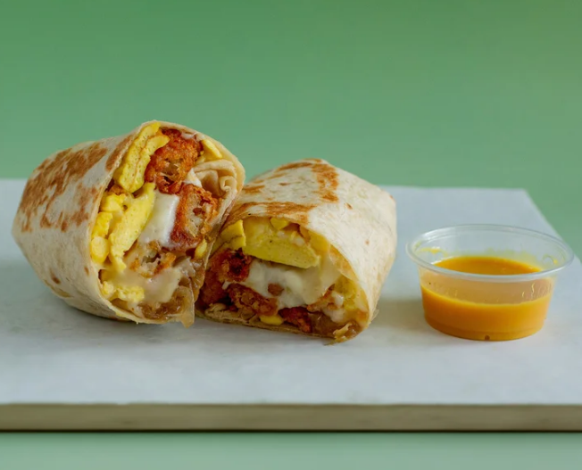

assets/sweet-palm-breakfast-burrito.jpg

Sweet Palm Coffee & Food
Sweet Palm Coffee is a quick-serve cafe at 471 King Street, and the burrito is the reason a lot of people stop in before they ever look at the latte list. It is built with eggs, crispy potatoes and cheddar, finished with avocado and pico, and served with a green sauce on the side. Steak is the house protein, and the same build comes as a bowl if you want to skip the tortilla.
Food is made in house and the kitchen takes changes and add-ons without fuss. Pair it with an iced latte as a combo, or go further down the menu for a Sweet Palm Latte, a ceremonial matcha or a dirty soda.
- Address 471 King St, Charleston, SC 29403
- Hours Mon–Thu 8:30am–4pm · Fri–Sun 8:30am–5pm
- Phone (843) 806-7342
- Good for Grab and go, dine in, carryout and delivery
What Puts Sweet Palm at the Top
Three things separate a good morning burrito from a forgettable one: potatoes that stay crisp, eggs cooked to order, and a sauce with enough acid to cut through the cheese. Sweet Palm gets all three, and the avocado and pico keep it from eating like a brick. The steak version holds you through a full day of walking King Street.
Location matters too. The shop sits in the middle of the peninsula's main shopping stretch, a short walk from the College of Charleston and the hotels around Marion Square, so it works for students between classes and for visitors who want something fast before a tour. Breakfast runs all day, which most sit-down brunch rooms in town cannot say. More background is on the about page, and the Eat Sweet Palm site covers the food side in more detail.
More Morning Burritos Worth Ordering Downtown
Sweet Palm is the first stop, but it is not the only wrapped breakfast on the peninsula. Further up the street, The Daily at 652 King has a long-running favorite: a tortilla crisped on the flat top around eggs and potatoes, with a chili verde sauce that regulars talk about more than the coffee. It opens at 7am and the line moves quickly.
On the Westside, Daps Breakfast & Imbibe on Ashley Avenue serves breakfast all day in a small neighborhood room, and its burrito has picked up a following among people who usually come for the hash and pancakes. A few blocks south near MUSC, Halo rolls one with pork sausage, corn salsa, peppers, onions, cheese and eggs, with home fries and salsa on the side. It is a hospital-district staple and breakfast service ends mid-morning, so go early.
South of Broad, Alcove Market at The Jasper calls its version El Padre: scrambled egg, chorizo, guacamole, cheddar and salsa roja. It is the pick after a walk around Colonial Lake. On the east side, Beech on East Bay keeps things lighter with spinach, tomato, turkey bacon, avocado and egg in a flour wrap.
For a plant-based order, Huriyali Gardens on Huger Street makes an all-day burrito with roasted potatoes, black beans, guacamole, roasted salsa and a vegan chipotle aioli. Egg and cheese can be added.
Burritos Off the Peninsula
If you are staying outside downtown, West Ashley has the deepest bench. Biscuit Bros on Sam Rittenberg is known for biscuits and gravy but the burrito gets just as much praise, Flying Biscuit Cafe serves one as a full plate all day, and Triangle Char & Bar puts one on its weekend brunch menu on Savannah Highway.
In North Charleston, Dashi takes the idea in a different direction with smoked gouda, fried rice, Thai slaw and sriracha hollandaise. Across the bridge in Mount Pleasant, and again on Johns Island, Sunrise Bistro keeps a classic diner-style version on the menu.
How to Order One Like a Local
Ask for the sauce on the side if you are walking with it; a burrito travels better dry and King Street sidewalks are not built for drips. If you are eating in, get it sauced. At Sweet Palm, adding a protein or swapping to a bowl takes one sentence at the register, and the combo with an iced latte is the best value on the board.
Weekend mornings get busy everywhere on this list between 9:30 and 11:30. Ordering ahead for pickup skips the wait, and Sweet Palm also handles carryout and delivery. Feeding an office or a bachelorette house? Sweet Palm Events takes large orders, and the catering page has the details.
Making a morning of it on King? The food stops around King Street guide covers what to eat next.
Start With the One at 471 King
Eggs, crispy potatoes, cheddar, avocado, pico and green sauce. Open daily from 8:30am.
Order Pickup View Full Menu